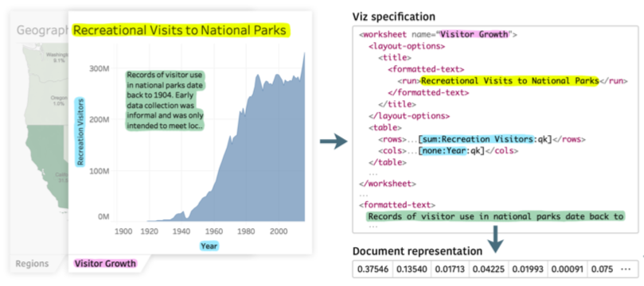

Cloud-based visualization services have made visual analytics accessible to a much wider audience than ever before. Systems such as Tableau have started to amass increasingly large repositories of analytical knowledge in the form of interactive visualization workbooks. When shared, these collections can form a visual analytic knowledge base. However, as the size of a collection increases, so does the difficulty in finding relevant information. Content-based recommendation (CBR) systems could help analysts in finding and managing workbooks relevant to their interests. Toward this goal, we focus on text-based content that is representative of the subject matter of visualizations rather than the visual encodings and style. We discuss the challenges associated with creating a CBR based on visualization specifications and explore more concretely how to implement the relevance measures required using Tableau workbook specifications as the source of content data. We also demonstrate what information can be extracted from these visualization specifications and how various natural language processing techniques can be used to compute similarity between workbooks as one way to measure relevance. We report on a crowd-sourced user study to determine if our similarity measure mimics human judgement. Finally, we choose latent Dirichlet allocation (LDA) as a specific model and instantiate it in a proof-of-concept recommender tool to demonstrate the basic function of our similarity measure.
Paper

VizCommender: Computing Text-Based Similarity in Visualization Repositories for Content-Based Recommendations
Fig. 1. Outline of our process: (1) Extract and analyze textual content from viz specifications belonging to two VizRepos. Investigate appropriate content-based recommendation models with varying input features and implement initial prototypes to facilitate discussions with collaborators; (2) Crowdsourced study: Sample viz triplets in a semi-automated process, collect human judgements about the semantic text similarity, and run the same experiment with different NLP models; (3) Compare agreement between human judgements and model predictions to assess model appropriateness. Implement LDA-based similarity measure in proof-of-concept pipeline.
Fig. 2. Simplified example feature extraction from a Tableau workbook. To illustrate typical features, a highly abbreviated example of the workbook XML is shown in the middle. Highlighted text color indicates the corresponding features that are converted into a numeric vector representation and used to compute text-based similarity. Similar types of text gets extracted from the remaining views and dashboards of the workbook.
Fig. 3. VizCommender interface that allows users to browse through a VizRepo. Workbook thumbnails are arranged in a grid view. Users can search for content or further drill down by selecting one of the tags at the top. The quick view sidebar on the right provides further details including recommendations when a workbook is selected.
Fig. 4. Interface detail view with recommendations. (a) Interactive Tableau workbook; (b) Expanded recommendation panel at the bottom of the screen showing related workbooks; (c) Tab navigation to switch between different recommendation types; (d) Alternative recommendation panel showing workbooks that use similar data